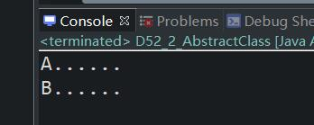

原文出处:本文由博客园博主心悦君兮君不知-睿提供。
原文连接:https://www.cnblogs.com/ruigege0000/p/11902136.html
原文连接:https://www.cnblogs.com/ruigege0000/p/11902136.html
一、单例模式
1.单例模式的缺点：单例模式的类型没有子类，无法被继承。
例如：下面的例子，由于父类的构造方法是私有的，所以子类中的构造方法是无法创建的，因为它是引用父类的构造方法
package com.bjpowernode.java_learning;
public class D52_1_ {
public static void main(String[] args) {
HttpServlet52 h1 = new HttpServlet52();
}
}
class Servlet52{
private Servlet52() {}
}
class HttpServlet52 extends Servlet52{
}二、抽象类
1.如何定义抽象类
class关键字前面加上abstract
2.抽象类无法被实例化
3.虽然抽象类没有办法实例化，但是抽象类也有构造方法，该构造方法是给子类创建对象用的。
4.抽象类中可以定义抽象方法
抽象方法的语法：
在方法的修饰符列表中添加abstract关键字，并且抽象方法应该以“；“结束，不能带有"{}",例如：public abstract void m1();
5.抽象类中不一定有抽象方法，但是抽象方法必须出现在抽象类中，因此继承抽象类的子类中必须将父类中的抽象方法覆盖（如果有抽象方法的话）
6.一个非抽象的类继承抽象类，必须将抽象类中的抽象方法进行覆盖，实现，重写。
package com.bjpowernode.java_learning;
public abstract class D52_2_AbstractClass {
//Constructor
D52_2_AbstractClass(){
System.out.println("A......");
}
public abstract void m1();//抽象方法
public static void main(String[] args) {
D52_2_AbstractClass d1 = new B52();
}
}
class B52 extends D52_2_AbstractClass{
B52(){
//这里省略了super(),实际上默认是有的,父类的构造方法虽然调用了，但是并没有创建父类对象。
System.out.println("B......");
}
public void m1() {};
}

五、源码：
D52_1_SingleMode.java
D52_2_AbstractClass.java
地址：
https://github.com/ruigege66/Java/blob/master/D52_1_SingleMode.java
https://github.com/ruigege66/Java/blob/master/D52_2_AbstractClass.java
2.CSDN：https://blog.csdn.net/weixin_44630050（心悦君兮君不知-睿）
3.博客园：https://www.cnblogs.com/ruigege0000/
4.欢迎关注微信公众号：傅里叶变换，个人公众号，仅用于学习交流，后台回复”礼包“，获取大数据学习资料